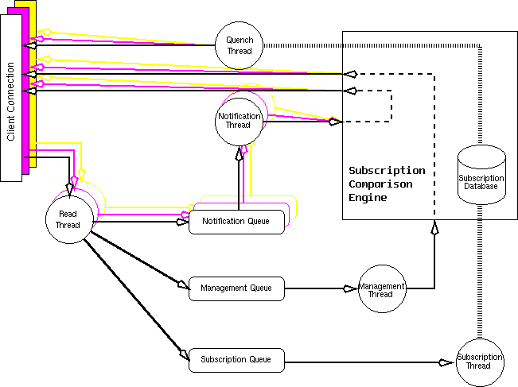

Distributed Systems Technology Centre
University of Queensland
Australia
http://www.dstc.edu.au/
{bill, arnold}@dstc.edu.au
Decoupling the production and consumption of information in software systems facilitates extensibility by removing explicit dependecies between components. So called "publish/subscribe" notification architectures are comprised of undirected production, and subscription to events by their characteristics rather than their source.Elvin is such a notification service, being developed at DSTC. It is being used as an application integration environment, for monitoring distributed applications and as as test-bed for distributed federation algorithms. We discuss its design, implementation and use.
Distributed systems are characterised by large numbers of autonomous processes running on numerous processors connected by a network. Unlike centralised systems, monitoring the state of these processes is difficult, hindered by their physical separation. The state of distributed processes can be interesting for many reasons: reporting the progress of computation, controlling dependent tasks, monitoring use and availability of resources, etc.
Notification systems attempt to provide a mechanism for signalling the occurance of an event and informing interested parties. Typically, they support a mechanism for dynamically registering an interest in some types of events, thus removing the necessity of establishing dependency relationships between event producers and consumers at build time.
This selective delivery of notification is fundamental: conventional broadcast and multicast communications mechanisms fail in large-scale distributed environments due to the sheer number of recipients. A subscription based service can drastically reduce the required fanout. [1] [2]
Finally, consideration must be given to scalability. While use of subscriptions reduces the immediate burden on the distribution mechanism, it will not scale beyond the capacity of a single notification server. Federating the distribution mechanism across multiple domains allows the cost of delivery to shared, thus removing the upper bound imposed by the possible performance of a single delivery component.
Elvin is a notification system under development at DSTC. It was originally developed to gather events for visualising distributed systems[3]. The initial implementation was a centralised DCE[15] server that delivered all notifications to all attached consumers, but demonstrated the need for a notification service as part of a distributed infrastructure.
Much of the current and planned design results from experiences with this initial implementation. The service, named Elvin 1.0, was released with the first software distribution from the Architecture Unit which also included versions of Walter (DSTC's visualisation tool), an ODP-derived Trader and Type Manager, and was used by various projects within the DSTC.
Bruce McClure from DSTO subsequently ported this version of Elvin to several additional platforms unavailable at DSTC including Solaris, HP/UX and OS/2 as part of its use in the Defence Demonstrator project.[16]
The major problems with this version were the necessity of using DCE, the need to instrument applications to emit notifications to Elvin, and the absence of subscriptions and filtering.
For portability and ease of use, the DCE Elvin was migrated to use TCP/IP, and subsequently partially integrated into Open Environment's Encompass [4] environment. Using hooks into the Encompass IDL compiler, we were able to generate stubs that automatically emitted notifications for all RPCs made by Encompass applications in a format suitable for visualisation using Walter. For users of Encompass, this overcame the major problems of the first version.
Subsequent work within the DSTC developed a utility that post-processed stub code generated by the DCE IDL compiler to insert similar notification calls for RPCs.
Several other variations of the basic code were explored at this time resulting in a TCP-based service that was released as Elvin 2.0.
Elvin 3.0 began with a requirements gathering phase and quickly discovered a vast wish-list of sometimes contradictory features:
It was decided to prioritise these goals, implementing them over multiple phases. Elvin 3.0's main objective was defined as the implementation of a mechanism for providing content-based subscription. This has been done with many of the other goals in mind, so that performance is reasonable, management is possible, and the API is simple.
Federation and applications are the main goals of the current Elvin 4.0, with more language bindings and greater platform support as secondary goals. Reliability and security remain unplanned although there have been attempts to provide for them architecturally.

Figure 1 shows the architecture of Elvin clients and servers. Central to the architecture is the decision that clients are simply specialised servers. Simple consumer-only clients need not process subscription requests from the server. Simple producer-only clients will not receive notifications and not require the subscription engine. Most clients will have a single connection only but may use multiple connections if needed.
The server contains some extra logic and a management stack, but the base functionality of the clients is the same as that of the server. Each queue is managed by a thread (or thread pool).
Following a notification through the server, we see that it is read by the read thread and placed on the notification queue. This notification is then evaluated in the subscription engine and written to clients that have matching subscriptions. Similarly, a subscription arrives at the subscription queue but instead causes the subscription engine to be updated, possibly causing quench expressions (reverse subscriptions) to be emitted to clients.
The Elvin library has been designed this way to enable federation. Allowing servers to be clients of each other requires minimal code changes, and the management of federations can be externalised. This allows the federation management to be rapidly prototyped without impacting the development of the core Elvin.
Prior to version 3.0, Elvin acted as a simple redistribution service: all notifications received by the server were sent to all attached consumers. While this had been recognised as a weakness since the initial design, a means of efficiently redistributing the notifications to selected consumers was considered a difficult issue, and unnecessary for its immediate use.
Most existing notification services [1], [5], [6], [7] rely on the specification of channels or subjects - a means of directing like events into groups which are then nominated by subscribers.
Our experience with Elvin had however demonstrated the desirability of completely separating the generation from the consumption of notifications. By using channels to select event types, a dependency is created between the consumer and producer of notifications. At some level, a consumer is dependent upon the producer of notifications, but a channel-based mechanism additionally makes the producers dependent upon the consumers.
It was our goal to completely disconnect the generation and consumption of notifications, allowing consumers to subscribe purely on the basis of attributes of the event.
The performance overhead of content-based delivery as opposed to delivery on the basis of channels is considerable, and many implementation strategies were considered. A potential solution was developed[8], but the structure of the Elvin 2.0 server was considered unsuited to supporting this mechanism and thus an Elvin revision was commenced.
The initial phase of this revision concentrated on restructuring the server to support content-based subscriptions. Current work is using this base as a platform for experimenting with federation mechanisms.
A notification consists of a set of named and typed data elements. There are no mandatory elements, nor is the number of elements constrained. The current implementation has an arbitrary constraint on the overall size of a notification
A subscription is a boolean expression over the elements of notifications. The boolean expression is evaluated by the Elvin server, and if true, the subscriber is sent a copy of the notification. The subscription is specified by the client using the subscription language described below. A client can have multiple subscriptions, and can therefore match the same notification multiple times. In this case a notification is delivered to each matching subscription although only one notification is sent ``over the wire''.
The server supports integer, floating point and string data types. Given the flexibility of the notification structure, more complex types were considered unnecessary but are relatively easy to add. Aside from the basic boolean and arithmetic operations, the subscription language provides:
An existence test, using the exists() function. It returns true if the named element is present.
Data type checking, using the datatype() function. The names of the available types are defined symbols in the subscription language.
Regular expression matching, using the matches() function. Applicable only to string data type, the matches() function provides full POSIX regular expressions.
subscription:
bool_expression
| var_expression
bool_expression:
"(" subscription ")"
| "!" subscription
| subscription "&&" subscription
| subscription "||" subscription
| "exists(" NAME ")"
| type_expression equality_operator type_expression
type_expression:
"string"
| "int32"
| "float"
| "datatype(" NAME ")"
var_expression:
numeric_expression
| string_expression
numeric_expression:
NAME numeric_operator INTEGER
| NAME numeric_operator FLOAT
| NAME numeric_operator NAME
string_expression:
NAME equality_operator STRING
| STRING equality_operator NAME
| NAME equality_operator NAME
| NAME "matches(" STRING ")"
equality_operator:
"=="
| "!="
numeric_operator:
"=="
| "!="
| "<"
| ">"
| "<="
| ">="
NAME: [a-zA-Z][a-zA-Z0-9_]*
In Elvin 3.0, the evaluation of subscription expressions is simplistic. It was explicitly decided to restructure the server before attempting to evaluate subscription expressions efficiently.
Thus, each subscription is compiled into a subscription tree at the server, but there is no attempt at combining or merging individual trees. As part of our future work, this may be replaced with a more efficient mechanism based largely upon [8].
Fundamental to the Elvin design is the desire to reduce network traffic so that notifications should be delivered only where they are needed. Elvin provides a mechanism for clients to obtain the combined active subscription expression in the server. These ``reverse subscriptions'' are called quench expressions. A quench expression serves two purposes. Firstly it allows the fan-out to be instantly reduced by stopping the clients from sending a notification for which there are no consumers. Secondly, it enables some application classes that would previously not have been possible.
An example of this is an application that generates an event every time a file is modified. Without support from the file system, the sheer volume of files to monitor would make this unworkable. However, if the application knows which files to monitor by obtaining the list of active subscriptions, it becomes practicable to have a service that monitors changes to files.
The C client library returns quench expressions as a string containing a subscription expression. To be useful, some higher-order functions are necessary and for reasons of speed (coding rather than execution) these have been written in Python. They provide a facility to acquire the subscription expressions in a reduced boolean form represented as a tuple of the attributes that were desired. The application requests the attributes it are interested in (e.g., for the file monitor it might be directory or filename), the operators that it will accept (e.g, equals, matches), and the range of values allowed. A list of lists is returned containing a reduced set of matching subscriptions with the operators and values requested. It is this higher-order set of functions that make quenching easy to use; it is intended to move this functionality into the C library as a first class function.
Elvin 3.0 is implemented in C using TCP/IP as a communication protocol. C was chosen as the implementation language for performance and portability. We also wanted to offer many language bindings and felt C was the most universal in terms of support from other languages.
The major component is a producer/consumer library libvin.so. This includes the marshaling and communications layers, the subscription language parser, the subscription evaluation engine, queue managemment, threads handling, the notification types, and the user API.
The marshaling and communications layers are written to be replaceable and concurrently selectable. Little effort has been put into the initial versions as it is anticipated that eventually the service will run over many transports.
Distributed systems are typically heterogeneous. Elvin has been developed on a Digital Unix platform, with particular attention paid to its portability. Current ports exist for IBM AIX 4.1 and Sun Solaris 2.5. Language bindings include: C, Java, and Python, with Smalltalk bindings underway.
While we intend to port the Elvin client libraries to Microsoft Windows 95, the Elvin server is not a trivial process, typically using 20Mb of memory and large amounts of CPU. The threaded design allows us to use CPU on multiple processors in a machine with symmetric multi-processors. For this reason, we do not intend to port the server to Windows 95, although a Windows NT port will begin shortly.
During the design process, threads were identified as a major structural and performance issue for the Elvin implementation.
The structure of the Elvin server, in particular, is dependent on the threading strategy adopted.
The Elvin server, by its very nature, involves large amounts of I/O coupled with fairly intensive computation. We chose to use threads in the server in an attempt to reduce the latency of notification traffic, which would otherwise have been complex to manage.
Threads allow connections to be handled independently, they allow updates to subscriptions to be handled separately from processing notifications, and allow the performance characteristics to be altered dynamically. The current Elvin maintains a thread for connection handling, a read, write, and notification evaluation thread for each active connection, and a single thread for updating subscription expressions (and emitting quench expressions).
The next version of Elvin will allow thread pool sizes and priorities to be managed via external applications to dynamically alter the performance characteristics of the server. Statistics about individual connections will be maintained to allow the throttling of individual clients. Elvin 3.0 throttles all clients when the event rate becomes too high.
Together with the basic client and server components, the project plan for Elvin 3.0 called for the delivery of several client applications demonstrating the use of Elvin by both end users and programmers. Elvin 4.0 will expand this client base to produce clients that are of more direct use within the DSTC environment.
We began by surveying languages for client development. As a minimum we wanted an OO language, with UI primitives, and garbage collection. Recognising that interpreted languages provide a superior environment for this style of development, we began by using Java [9] and the AWT [10] together with Kalimantan [12] as our development environment.
However, after some time it became apparent that bugs in the Java implementation available from Sun made it impossible to use the Elvin client libraries from within a Java class. There is no interoperability between the Java threads and Solaris 2.5 pthreads. The Java language binding was subsequently written as a client only 'on-the-wire' implementation and thus remains platform independent.
Hector [11], a related project within the Architecture Unit had had some experience with Python [13] and the client programs were subsequently rewritten in Python using the Rivet [14] widget set.
A Python wrapper class for the Elvin client library was developed allowing Python programs to instantiate an Elvin object with notification and subscription methods. Instantiation of an Elvin object creates the connection to an Elvin server. This wrapper class provides programmers with a simple interface to Elvin. Notifications are specified as a python dictionary vastly simplifying the creation and consumption of notifications
Elvin produced an initial set of clients used mostly for testing, and a growing number of services have been produced.
A command line producer allows arbitrary notifications to be produced from a shell or command language. It will read notification data from the command line or interactively. A corresponding command line consumer allows users to subscribe to arbitrary expressions with matching notifications being printed.
A generic GUI producer and consumer has been implemented. It provides a simple X-windows interface to Elvin. This application is written using the Python Elvin bindings and Rivet, a Tk-based widget library. It allows the user to have multiple consumer and producer windows. The user can load and save both subscription expressions and notification definitions.
The most widely used Elvin application is a ``tickertape'' client. It is a scrolling one-line window of event notifications, providing information from many sources using a minimum of screen space. Tickertape contains a mechanism for creating notifications, so it can be used a chat service. Tickertape uses the subscription mechanism to segment the class of notifications into groups allowing users to filter the information they wish to appear.
Tickertape provides an interface for a number of interesting user-level services among which is the ``newswatcher''. This provides a real time filter of usenet news allowing the user to select usenet articles on fairly arbitrary criteria (email or name of sender, subject, keywords, number of crossposts). The user (with a regular expression) defines the articles they would like to see; the summary information is displayed in the scrolling window. If users wish to see the article itself, they click on it to obtain the full article. This is one example of a number of event sources available through this interface. The newswatcher is a another example of a service that is enabled through the quenching mechanism and would otherwise be impossible due to volume.
A number of smaller awareness clients have been produced including a generic ``Biff'' class to allow shared awareness in narrow domains (from who's playing Xpilot, to who's drinking coffee). The ability for reuse is greatly enhanced in a publish-subscribe environment with new applications being able to borrow components and integrate services (e.g, a mail biff was produced in minutes by combining the file monitor and the biff class).
Performance of Elvin can be categorised in several ways. The basic metric is obviously notification throughput, but this is naive: the number, source, and complexity of subscriptions have a major impact on the throughput.
Additional factors that could be used to characterise the server's performance are its use of memory and processor usage. An ability to process thousands of notifications per second is impressive, but perhaps less so if at the cost of 95 percent usage of two processors and 300M of resident RAM!
Some initial performance measurement has been performed. An Elvin server on a dual-processor 250Mhz DEC alpha containing ten subscription expressions matching five elements (two string, two integer, and one float), can process 500 notifications per second (each notification consists of five elements (two string, two integer, one float) where 10% of notifications match a subscription.
There is a strong need for an independent set of metrics for measuring performance. Elvin 4.0 will gather detailed statistics of throughput in an environment of real use. Elvin 3.0 contains some statisical information but its management is difficult
Elvin is available immediately for use within the DSTC and its participant organisations. It has been used within the Hector project for some time and is now quite stable. It is anticipated that the API will remain constant over future releases. There is a simplified logging API that allows notifications to be generated for Walter[3] enabling visualisation of distributed applications.
Following this release, the Elvin project has two further phases planned. The following sections describe the proposed enhancements to the available Elvin functionality.
Our most recent work has been to implement several clients for the Elvin service. This will continue, to encourage its adoption, to demonstrate to other programmers the style of application possible, and to provide an environment within which to test the server.
Planned new clients include:
Generation of events from the Uninterruptible Power Supply (UPS). Planned consumers of these notifications include an automated shutdown mechanism, adding a hook for X window manager WM_SAVE_YOURSELF, an emacs save-buffers hook, etc.
A web page monitor (similar in principle to the file and news monitors) to notify people on updates to web pages. This would be based upon Orion[17].
A DCE watcher to monitor the DCE processes so that DCE can be restarted.
An event correlation engine.
A user location service.
A machine status monitor.
New delivery mechanisms will also be supported, including an e-gram facility and email generation. The GUI producer and consumer will be enhanced to make it more friendly and configurable.
Extensions of the existing subscription language to become part of a general type description language are possible, depending upon its progress as part of DSTC's Type Management project. The OMG Trader Constraint Language (enhanced with regular expression matching) may also be a candidate for a subscription language.
Additional primitives within the existing language are also possible. Examples are set inclusion operators and constant expressions.
In order to scale Elvin beyond a local network, we intend to adopt the concept of federation. Federating Elvin servers will require one server to subscribe to another - the existing subscription and quench mechanisms will enable both the producer and consumer to control the events shared between them.
We envisage the Elvin servers will support a local network for an organisational unit. Within DSTC, for example, each site would probably run a local Elvin server connected either hierarchically to a master server, in a ring or double ring topology, or as totally connected peers.
The benefits of federation are that the consumer receives a single stream of events which have already been filtered by the producer server, reducing the volume that must be redistributed. We believe that this will enable scalability to an enterprise-wide size.
Beyond individual enterprises, scalability is a question of which events are made available. Exporting primitive event notifications beyond even an organisational unit will introduce difficulties in handling the volume: it will be necessary to perform correlation and generation of higher level events at the local server to prevent flooding the federation.
Of course there are security considerations to exporting events beyond your enterprise as well. We expect that with sensible usage, it will be possible to meaningfully scale Elvin federations to an Internet wide service using hierarchical structure to reduce volume. A concept of administrative domains will be introduced.
This will introduce additional necessity for securing subscriptions: what if someone in the UK were to subscribe to an event type that was generated ten times a second at every Elvin site? Some mandatory filtering of subscription propagation will be required.
Management of an Elvin server will be required to tune its performance and alter its policies.
Performance tuning will include altering the priority and number of threads in the various thread pools, altering high-water marks for ignoring sources, changing the frequency of quench expression regeneration, etc. In addition to the control functions, gathering of statistics to inform those decisions will also be required.
Server policies, other than those purely performance related, include propagation rules for federation, access control and federation links.
Some of these functions are currently available, while others will be added as they are required. A server management application will present the statistics graphically and allow an administrator to control the server dynamically.
Generated notifications can be received by arbitrary subscribers. While this is possibly fundamental to the publish-subscribe model, it may not be desirable in a commercial context. Some means of ensuring that only authorised subscribers can receive notifications is necessary.
One approach being considered is to use one way transformations of elements of notifications requiring these ``secure attributes'' to be matched exactly at the server. This would require ``producer'' and ``consumer'' datatypes to be added to the base types supported by Elvin, but would essentially act as strings with special semantics at the server. Such a mechanism is still being examined and the quench facility introduces significant complications.
Other mechanisms are also possible, and we have yet to seriously consider any approach. Any security mechanism must scale well and not require encryption/decryption at each point in a delivery chain. Some multicast security mechanism is desirable but introduces complexity in key management.
Ultimately, performance is the vital factor in the success of Elvin. Events occur rapidly, and in large distributed systems, the total number of notifications generated could easily be in the millions.
The performance of an individual Elvin server (together with that of the communication network) determines whether an Elvin service can cater for the needs of an organisation.
Careful tuning of thread pool size and priority, minimisation of memory copies and optimisation of subscription evaluation are all required to improve the server performance.
To determine exactly how Elvin performs under a large, varied and realistic load, we hope to distribute a number of useful applications across DSTC in an effort to increase the notification volume. We'll use the gathered statistics to profile the server and focus our optimisation efforts.
The OMG has recently issued a Notification Service RFP. A group at DSTC is actively involved in this process. It is hoped that a CORBA standard Notification Service will be created that is publish-subscribe, has a defined subscription language, and allows dynamic definition of notifications. A quench facility is extremely desirable, as is a plausible federation strategy.
The adoption of threads was an important and good decision. The benefits in performance gains are small compared to the benefits of simplicity and program structure. Threaded programming is difficult but rewarding, and for some classes of programs makes architectural decisions easier by clearly delineating areas of control. Adopting threaded programming is a paradigm shift akin to that seen in adopting object-oriented programming - the rewards are initially sometimes hard to see. Be wary of the lack of tool support and the non-standard nature of thread implementations.
The Elvin notification service works well as a standalone server. There is much work to be done in federation but this can only be done in an environment that is using the Elvin service for day-to-day activities.
The real challenge of the Elvin project is delivering services to users. It is easy to identify the need for and to develop infrastructure, but the success of any infrastructure project is determined by usage. To facilitate this, the Elvin project must produce not only infrastructure and generic clients, but also produce real applications of use to people in a distributed environment. Services and federation are the main goals of the next phase of the Elvin project.
Quenching is an extremely powerful mechanism. For clients, its usefulness is in part determined by the quality of the functions that can manipulate them. For servers, it provides an enabling mechanism for federation.
The work reported in this paper has been funded in part by the Cooperative Research Centres Program through the department of the Prime Minister and Cabinet of the Commonwealth Government of Australia.